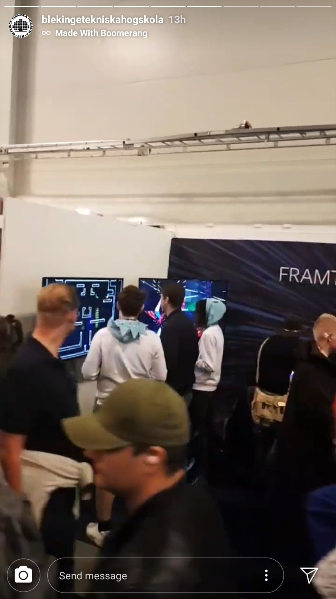
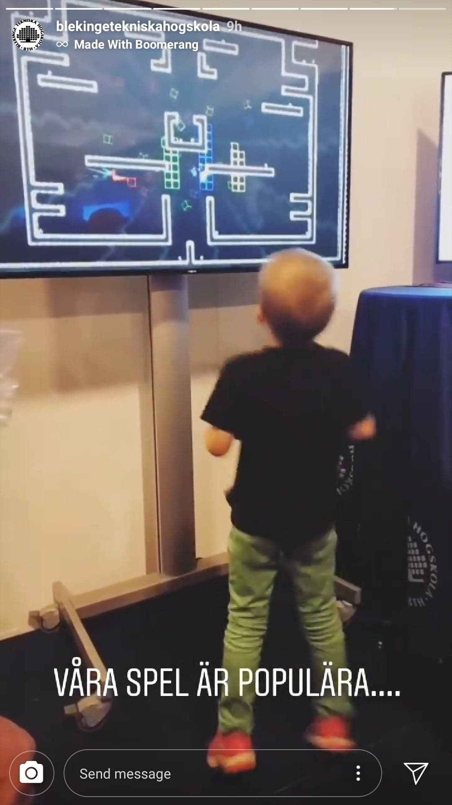
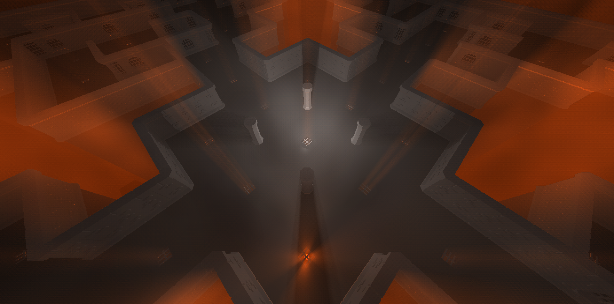
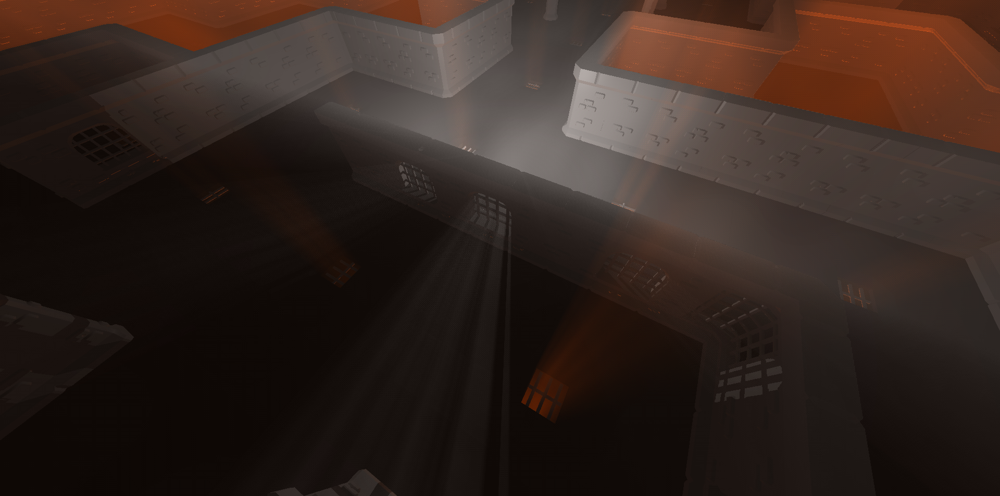
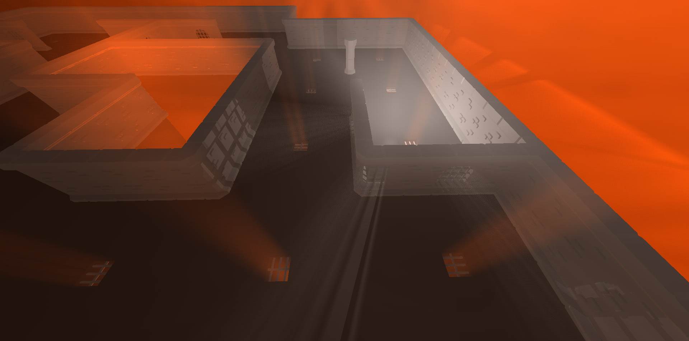

I program games and stuff.
- Here are some of my projects:
S.P.L.A.S.H2O (2019)
Splash is a ray-traced online first-person shooter. The story is that a scientist has cloned himself in order to have someone to play games with. He then proceeds to turn off all the lights in his laboratory and give all his clones some candles and a water gun each. What happens next is a last man standing water fight where the goal is to eliminate other players by extinguishing their candles. The game can be played online with up to 12 players in the same game. We were 12 students working together during the large game project at BTH. The game is made from scratch and I created the physics including collisions, raycasting, bounding boxes, octree as well as the particle effects framework/back end and frustum culling. The repo is available here!
SPASM (2018)
SPASM is a 2,5D arena shooter made by me and 4 other students during the small game project at BTH and is the result of 8 weeks of development from scratch. I contributed with creating models, animations, map building, block appearance and connections, score visualizations, and some varius gameplay related features. The repo is available here!
SPASM has been showcased by BTH at multiple events such as Comic Con Stockholm where the game was very appreciated. So much so that we have been recommended by BTH representatives to release the game on a platform like Steam. We would like to add online multiplayer support before releasing it, so let's see if it happens in the future.
 Sneakpeaks of works in progress (Ongoing)
  Mini Jam 158: Night Shift (2024)
Volumetric lighting, a scary procedurally animated spider and box delivery. What more could one want?
Made by just me and one other developer, in 72 hours for Mini Jam 158. With my WebGL engine as a base.
Check out the entry and play the game here!
Repo
Ludum Dare 54 - Ghost Gambit (2023)
We started this jam with a more developed engine than we have had previously, with a built-in editor ready, we felt confident that we could get lots done! And we really did, but we still didn’t quite reach our original game idea. Taking on netcode, bots and an idea including multiple rounds with eliminations was a bit too much.
In our original idea, there were supposed to be fewer graves available than the number of players, and when the last grave was claimed, the remaining players would be knocked out. This would continue until only one player is the only one standing. Since we could not complete this mechanic, we settled for allowing all players to claim graves and added a time summary for how long it took for every player to claim a grave instead.
Check out the entry here or play the game directly here!
Repo
Ludum Dare 53 - News Flash! (2023)
Iterating on the previous WebGL engine by making it much more capable of proper 3D rendering, we got fully immersed into the 3D world, making a first person news paper delivery game. Really happy with how it turned out! The scope was big enough that we felt happy with the result, but simple enough to actually get it working properly in the 72 hours we had.
Check out the entry here or play the game directly here!
Repo
Ludum Dare 51 - Decachronomorphia (2022)
For Ludum Dare 51, I expanded the typescript and WebGL engine I made for LD50 to include 3D rendering and some more advanced 3D physics. We made a dungeon crawler which looks kind of nice, but we overscoped a bit, and ran out of time before we managed to balance the game properly. Oh well.
Check out the entry here or play the game directly here!
Repo
Ludum Dare 50 - Mr. Fuse (2022)
For Ludum Dare 50, I ported the simple 2D engine we used for LD49 to typescript and WebGL. We made a foddian escort platformer where you move up a tower while bouncing a bomb, it's hard, but fun!
Check out the entry here or play the game directly here! (There are even touch controls so feel free to try it on your phone!)
Repo

Ludum Dare 49 - Un-stabled (2021)
I participated in Ludum Dare 49! The theme was "Unstable" and we went the punny way by making a game about getting out of the stable as a horse. Doing a game jam was super fun and I definitely want to do more of them!
Check the entry out here!
Repo
K2A web-based game (2019)
Written in HTML, CSS, and Javascript with WebGL as a freelance project ordered by the PR-agency Redgert Comms as a way to market the stock exchange listing of the company K2A.
The game can be played here!
Master thesis on collision detection using neural networks (2020)
Check out my masters thesis which I conducted together with my classmate Alexander Wester.
We experimented with using Neural Networks to detect collisions in 3D environments and comparing it to Separating Axis Theorem.
We were able to achieve intersection testing 15.6 times as fast as when using Separating Axis Theorem.
Link to publication